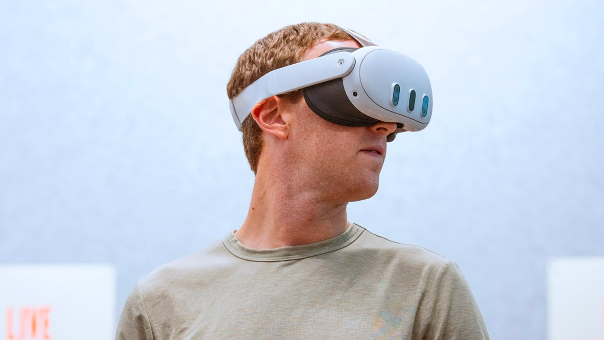

Виртуальная Реальность:
Инновации и Технологии

Виртуальная реальность (VR) представляет собой впечатляющий мир цифровых возможностей. Она позволяет людям погрузиться в уникальный виртуальный мир, использовать специальные устройства, такие как VR-очки и контроллеры, и наслаждаться новым уровнем взаимодействия с технологиями 21 века.
Возможности Виртуальной Реальности (VR)
В режиме VR пользователь имеет возможность не только играть в захватывающие игры, но и погружаться в увлекательные видеоролики, снятые в формате 360 градусов. Это позволяет человеку взаимодействовать с виртуальным миром, изменяя свой опыт и сценарии в реальном времени.
Пример виртуальной реальности с полным погружением
В режиме VR пользователь может как проходить игру, так и смотреть видеоролик, записанный в режиме 360 градусов. Это означает, что при повороте головой видно, что происходит сзади или сбоку, а это и является основным составляющим подобного погружения.
Очки виртуальной реальности
Очки виртуальной реальности являются ключевым компонентом для погружения в цифровой мир. Используя специальные линзы, эти устройства позволяют фокусировать взгляд на виртуальном мире, обеспечивая ощущение реальности. Они представлены в различных формах и размерах, настраиваемы по индивидуальным параметрам, и могут быть комплектованы геймпадами и сканерами, которые улучшают восприятие движений и позиций тела во время использования.
Типы виртуальной реальности
Виртуальная реальность разделяется на видео, снятое в формате 360 градусов, и специально разработанные игры. Видео сначала записывается на специальные камеры, а затем адаптируется для просмотра через VR-очки или специальные шлемы. Игры, созданные для VR, позволяют пользователям не только наблюдать окружающий мир, но и взаимодействовать с ним, перемещать объекты, ходить и использовать различное снаряжение.
Устройства для погружения в VR
Помимо VR-очков, другими важными компонентами VR являются контроллеры. Они отслеживают движения рук и пальцев, обеспечивая реалистичное взаимодействие с виртуальным окружением. Кроме того, камеры определяют позицию игрока в пространстве, устанавливая границы для безопасного использования VR. Эти устройства синхронизируются, обеспечивая более глубокий и захватывающий опыт виртуальной реальности.
Применение виртуальной реальности
VR не ограничивается развлечениями. Эта технология находит применение в области обучения, тренировок, медицины и других сферах. Она позволяет людям учиться, развиваться и погружаться в уникальные виртуальные сценарии, расширяя возможности человеческого восприятия и взаимодействия.